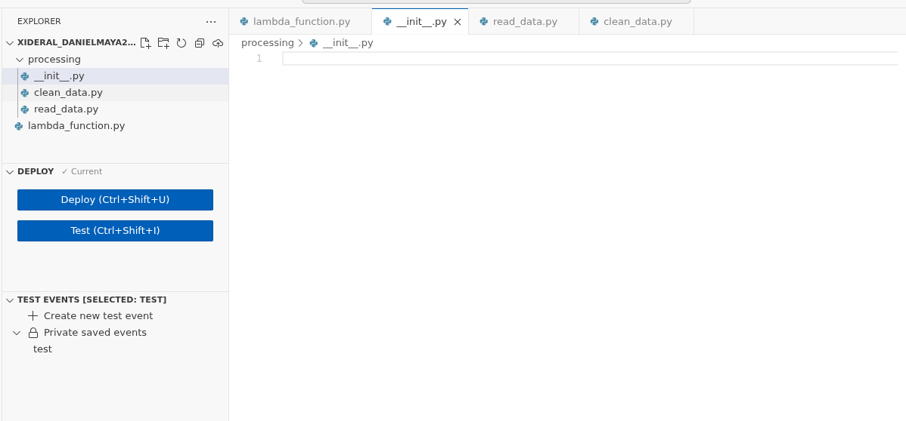
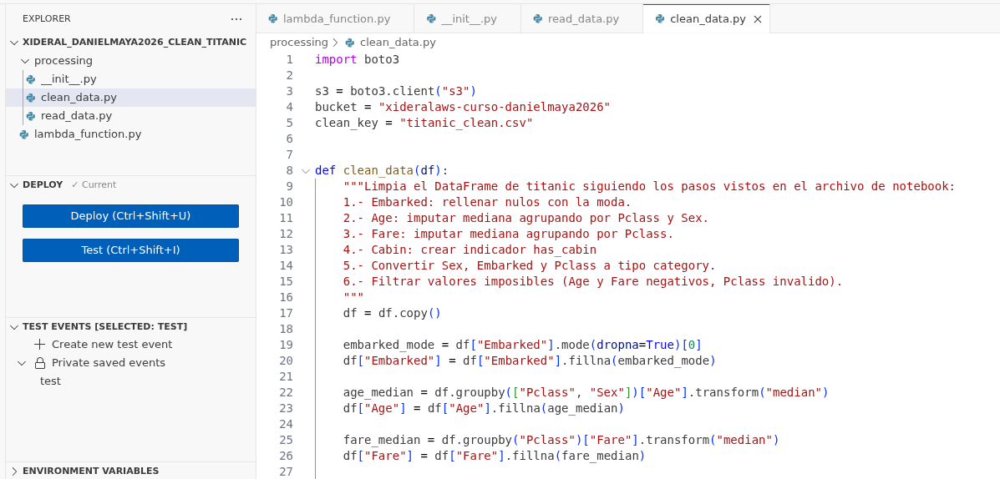
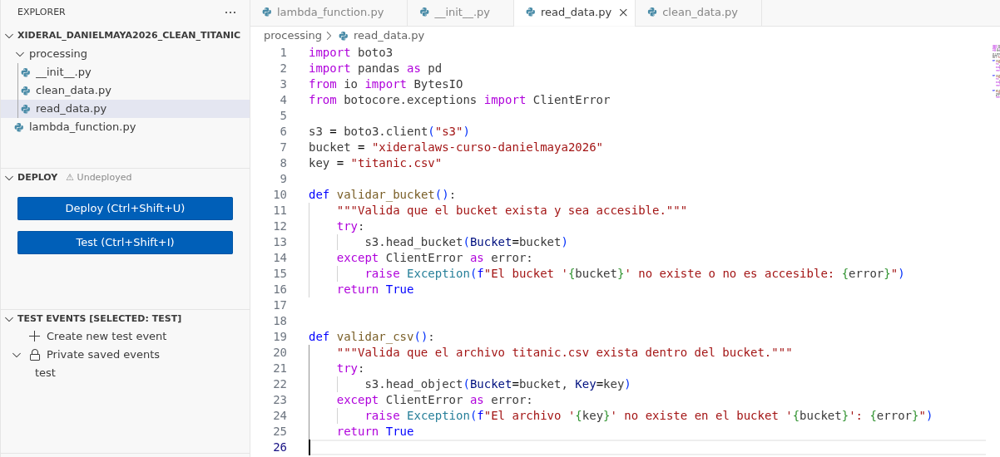
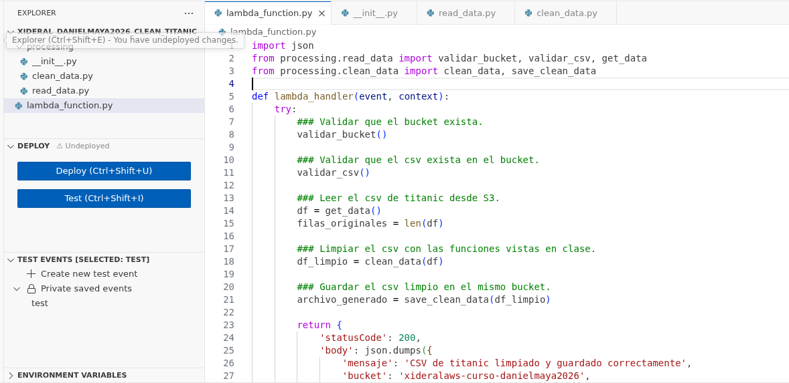
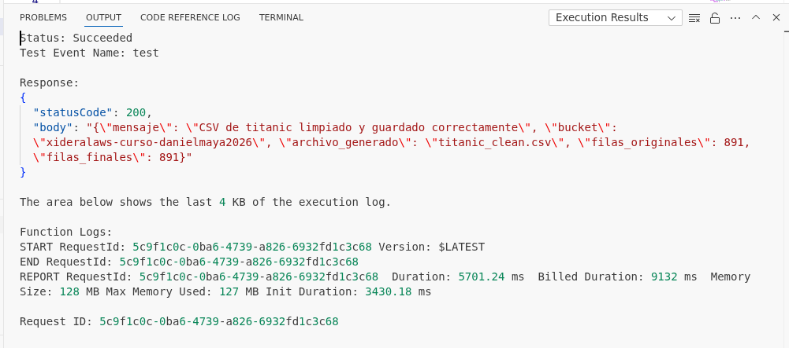
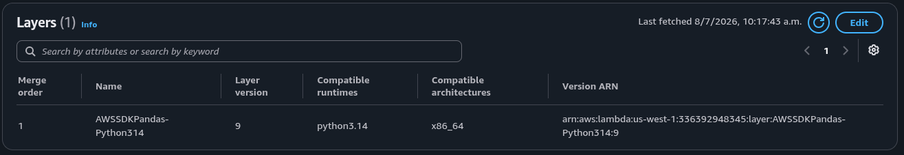
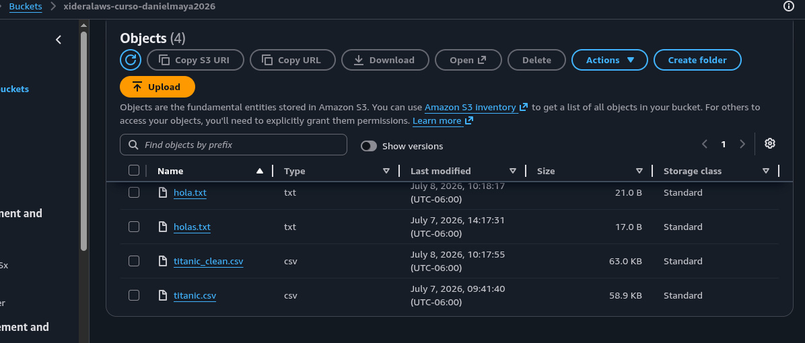

Archivo __init__.py vacio (para módulos)

Archivo clean_data.py con función para limpiar datos

Archivo read_data.py con funciones que validan bucket y otros aspectos del .csv

Archivo lambda_function.py que llama las funciones y devuelve un body

Ejecución de test donde la salida muestra el mensaje que se limpió, generó y guardo ese nuevo .csv

Implementacion del Layer para poder ejecutar la lambda

Sección Buckets donde se muestra los archivos creados en clases anteriores y el nuevo .csv generado